Phase 1: Repository Setup and Version Control:
-
Four properly structured Git repositories:
The first one is the orchestratinng repo, and the following four are the requested ones.
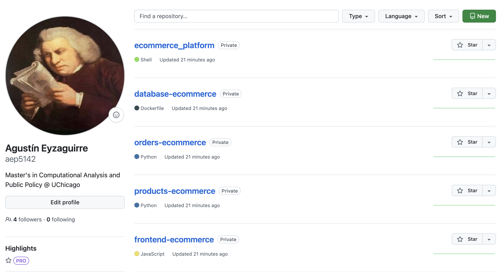
Database Repo
Orders Repo
Products Repo
Front-End Repo
Where Each repository of the four services has this same structure:
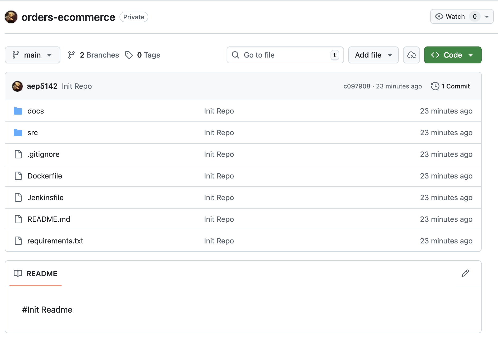
-
Documentation explaining your Git workflow and branching strategy:
Each repo inside docs/ has it's own. md file with the branching strategy.
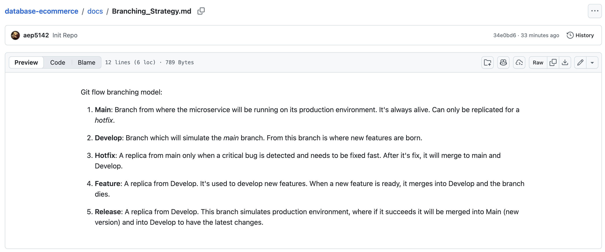
-
Initial setup of main and develop branches:
When starting, each repo has two branches: main and develop
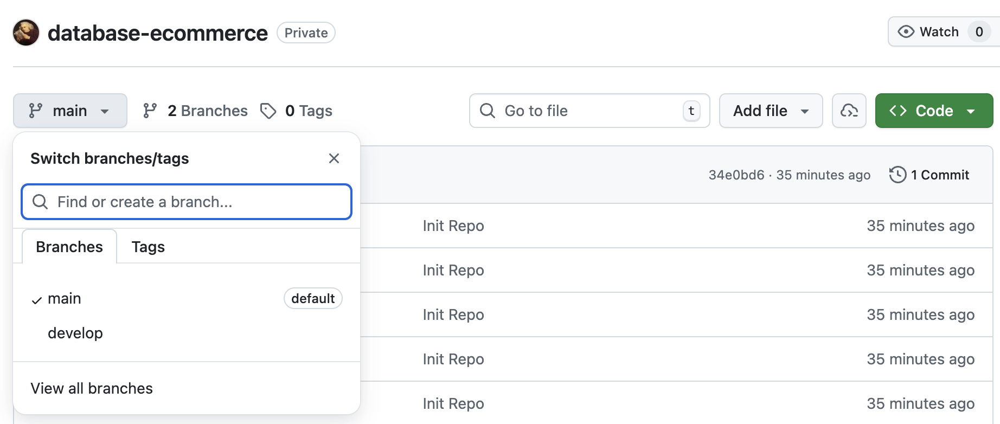
-
Complete feature development workflow (from branch creation to merge):
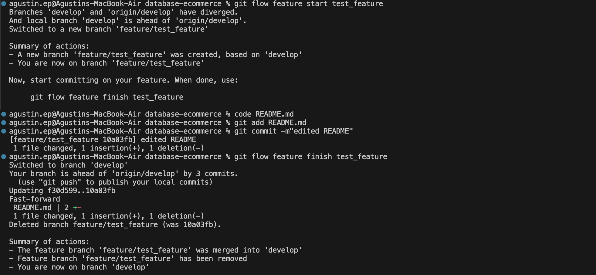
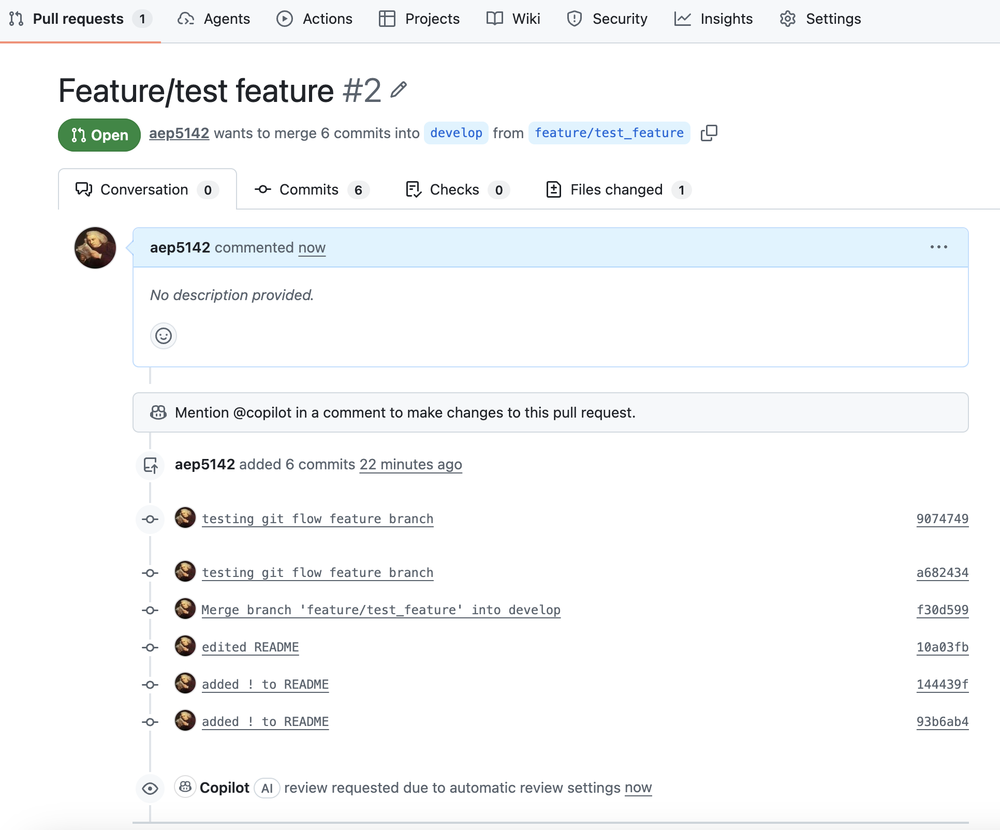
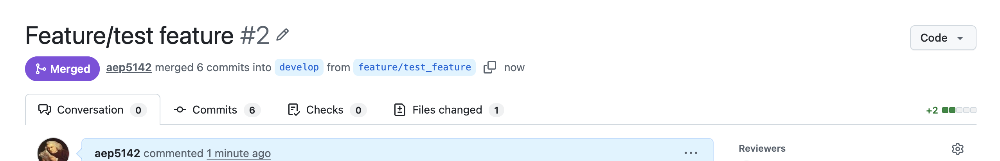
-
Complete release workflow (from develop to main):
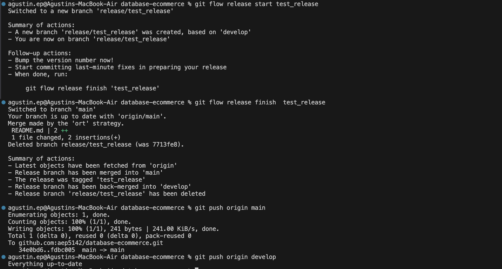
-
Complete hotfix workflow (from main back to main and develop):
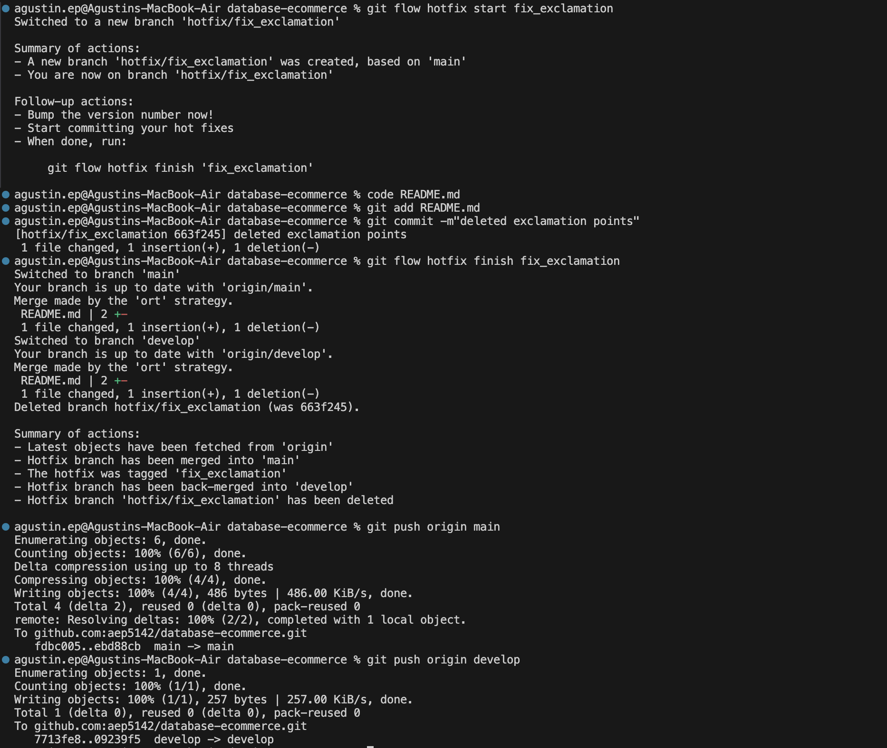
-
How all branch types interact in the Git Flow model:
Basically, I followed the git flow model from Vincent Driessen.
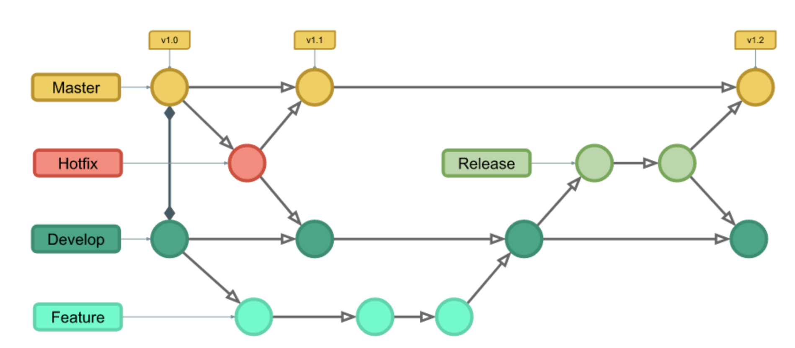
Phase 2: Containerization with Docker
Phase 3: Phase 3: CI/CD Pipeline with Jenkins
Phase 4: Infrastructure as Code with Terraform
-
Terraform modules and configurations:
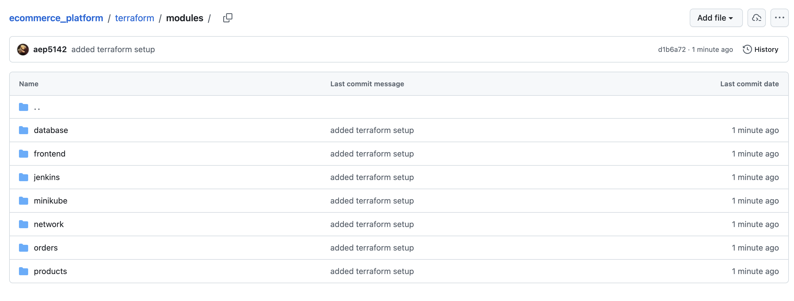
-
State management setup:
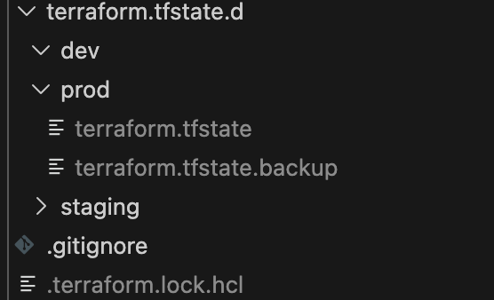
-
Terraform plan output for each environment:
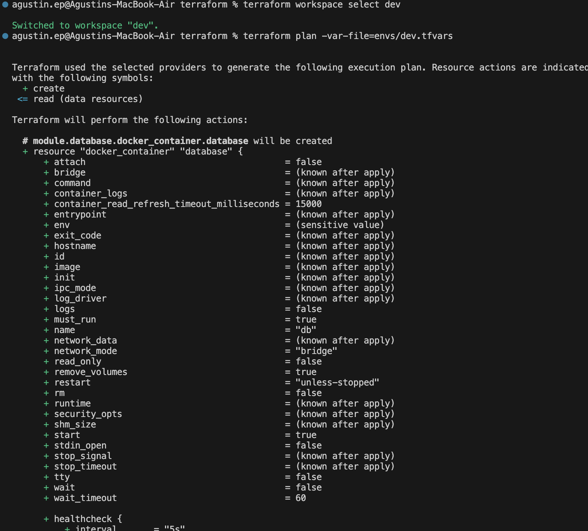
-
Successful terraform apply results:
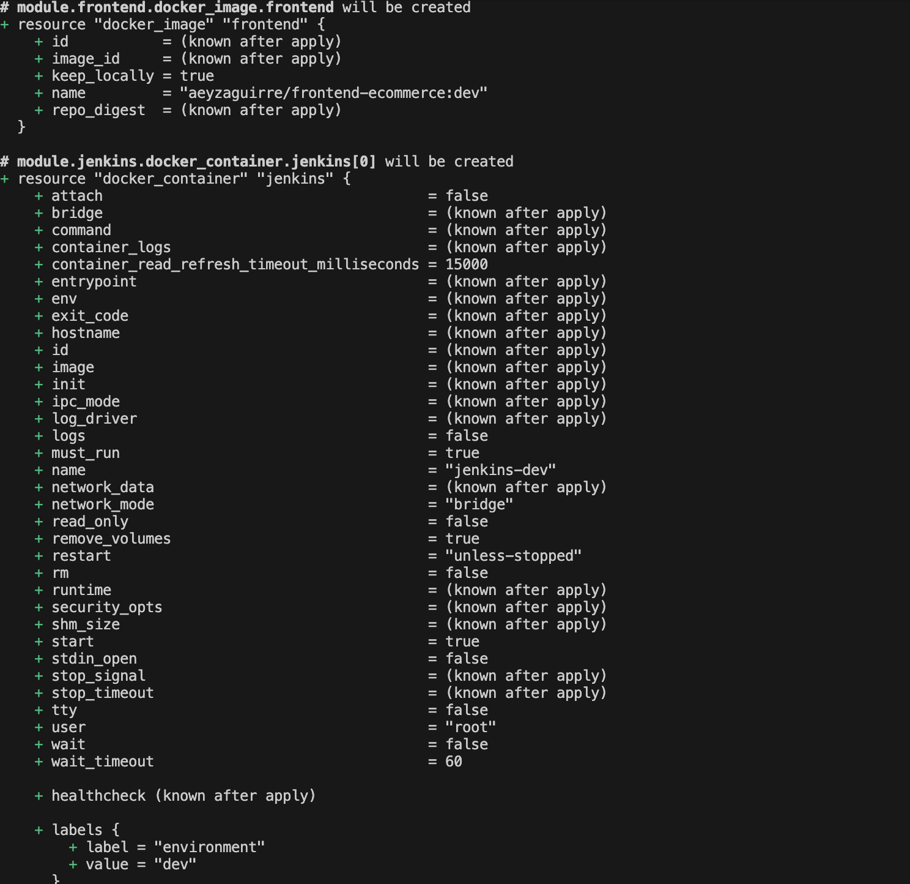
-
Running Minikube cluster and local resources:
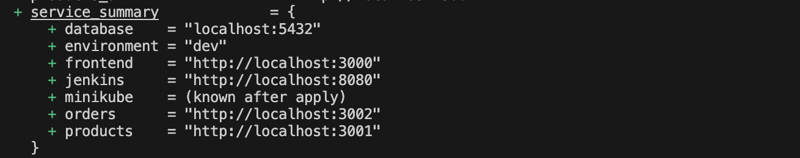
-
Terraform outputs that will be used by Jenkins:
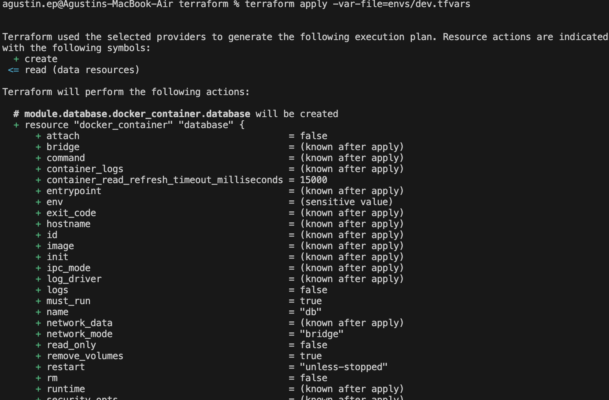